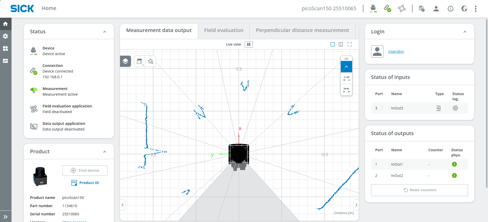
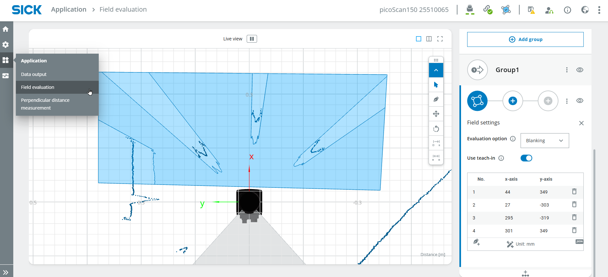

Der Boden ist Lava
Kurzbeschreibung
Dieses angeleitete Projekt zeigt, wie man mit dem LiDAR-Starter-Kit eine interaktive Version des Spiels „The Floor is Lava“ erstellt.
Sie werden ein Erfassungsfeld mit dem LiDAR-Sensor konfigurieren, das Ergebnis der Feldauswertung mit Python auslesen und einen Ton auslösen, sobald das Feld überschritten wird.
Projektinformationen
| Projektart | Erforderliches Wissensniveau | Voraussichtliche Dauer | Zusätzliche Hardware- und Softwareanforderungen |
|---|---|---|---|
| Betreutes Projekt | Grundlagen | 20 bis 40 Minuten | Mehrere Personen oder Gegenstände |

Ziel
Das Ziel dieses Projekts ist es, mit dem LiDAR-Starter-Kit ein einfaches interaktives Spiel zu entwickeln.
Nach Abschluss dieses Projekts sollten Sie in der Lage sein:
- Ein Feldauswertungskonzept erstellen
- Verwenden Sie „Teach-in“, um statische Objekte zu ignorieren
- Parameter für Feldverletzungen konfigurieren
- Das Ergebnis der Feldauswertung mit Python auslesen
- beurteilen, ob ein Schutzgebiet verletzt wird
- auf der Grundlage des Sensorergebnisses einen Ton oder ein Rückmeldesignal auslösen
Projektkonzept
In diesem Projekt wird der Boden vom LiDAR-Sensor überwacht.
Der Sensor erkennt, ob ein definierter Bereich von einer Person oder einem Gegenstand betreten wird.
Ein Python-Skript liest das Ergebnis der Feldauswertung vom Sensor aus.
Wird das Feld verletzt, gibt das Skript einen Ton aus.
Damit entsteht ein einfaches interaktives Spiel für „The Floor is Lava“.
Anleitung
Code-Beispiele
Die Codeausschnitte auf dieser Seite dienen als Beispiele.
Sie können den Code anpassen oder Ihre eigene Implementierung für das Projekt verwenden.
Feldbewertung
- Schließen Sie Ihr Gerät wie unter Erste Schritte beschrieben an. Die Benutzeroberfläche sollte nun in etwa so aussehen:

- Melden Sie sich als Service an, geben Sie das Passwort servicelevel ein und klicken Sie auf Standardpasswort beibehalten.
- Wählen Sie Anwendung > Feldauswertung und zeichnen Sie ein Feld in geeigneter Größe ein.

- Führen Sie ein Teach-in durch, um alle statischen Objekte zu ignorieren. Beenden Sie das Teach-in nach etwa 10 Sekunden.

- Legen Sie die Feldparameter fest, z. B. die maximale Ausblendgröße, die der minimalen Objektgröße entspricht, die in das Feld hineinragt.

- Sie können Ausgabe ignorieren
Programmierung
- Öffnen Sie eine Programmierumgebung für Python, beispielsweise Visual Studio Code.
- Geben Sie den folgenden Code ein:
import socket
HOST = "192.168.0.1"
PORT = 2111
def sopas(cmd):
with socket.socket(socket.AF_INET, socket.SOCK_STREAM) as s:
s.settimeout(2)
s.connect((HOST, PORT))
telegram = b"\x02" + cmd.encode("ascii") + b"\x03"
s.sendall(telegram)
return s.recv(1024).decode("ascii").strip("\x02\x03")
# Enable measurement
print(sopas("sMN SetAccessMode 03 F4724744"))
print(sopas("sMN LMCstartmeas"))
# Read field evaluation
response = sopas("sRN FieldEvaluationResult")
print("Field evaluation:", response)
- Das Ergebnis sollte in etwa so aussehen:

- 2 = Feld nicht verletzt, 4 = Feld verletzt
- Lesen Sie nun einen bestimmten Wert aus (Feld „verletzt“ oder „nicht verletzt“, z. B. um einen Ton abzuspielen oder ein Licht einzuschalten)
- 38:39 bezieht sich auf die Position im Ergebnis (erste Ziffer 2 oder 4)
- Überprüfen Sie, ob das Ergebnis die richtige Position angibt (entweder 2 für „nicht verletzt“ oder 4 für „verletzt“).
- Spiele einen Ton ab, wenn das Feld verletzt wird; andernfalls zeige den Text „Fehler“ an. Wichtig: Gib in der zweiten Zeile des Codes (unterhalb des vorherigen „import socket“) den Befehl „import winsound“ ein.
- Um die Sensordaten kontinuierlich auszulesen, fügen Sie den Code in eine „while True“-Schleife ein.
- Vollständiger Code:
Code
import socket
import winsound
HOST = "192.168.0.1"
PORT = 2111
def sopas(cmd):
with socket.socket(socket.AF_INET, socket.SOCK_STREAM) as s:
s.settimeout(2)
s.connect((HOST, PORT))
telegram = b"\x02" + cmd.encode("ascii") + b"\x03"
s.sendall(telegram)
return s.recv(1024).decode("ascii").strip("\x02\x03")
# Enable measurement
print(sopas("sMN SetAccessMode 03 F4724744"))
print(sopas("sMN LMCstartmeas"))
while True:
# Read field evaluation
response = sopas("sRN FieldEvaluationResult")
print("Field evaluation:", response)
output= response[38:39]
#print(output)
if output == '4':
winsound.Beep(200, 1000)
else: print('error')
- Nun können Sie den Parcours durchlaufen und überprüfen, ob der Code korrekt funktioniert.
- Wenn du möchtest, kannst du auch andere Geräusche oder Varianten des Spiels verwenden.
Erwartetes Ergebnis
Nach Abschluss dieses Projekts sollte das LiDAR-Starter-Kit erkennen, wenn ein Feld überschritten wird.
Ein erfolgreiches Ergebnis bedeutet, dass:
- Die Feldauswertung ist korrekt konfiguriert.
- Statische Objekte werden nach dem Einlernen ignoriert
- Im Sensorergebnis ist eine Feldabweichung erkennbar
- Python kann das Ergebnis der Feldauswertung auslesen
- Bei Überschreitung des Feldes wird ein Signalton ausgelöst
Zusammenfassung
In diesem angeleiteten Projekt haben Sie eine einfache interaktive LiDAR-Anwendung erstellt.
Sie haben gelernt, wie man:
- eine Feldauswertung konfigurieren
- ein Teach-In durchführen
- Feldparameter anpassen
- Feldwerte mit Python auslesen
- Werte für Feldverletzungen interpretieren
- basierend auf Sensordaten akustische Rückmeldung auslösen
Dieses Projekt zeigt, wie die LiDAR-Feldauswertung für interaktive Anwendungen und einfache spielbasierte Demos genutzt werden kann.
Nächste Schritte
Fahren Sie mit einem weiteren LiDAR-Projekt fort oder öffnen Sie die vollständigen Projektdateien auf GitHub.com.